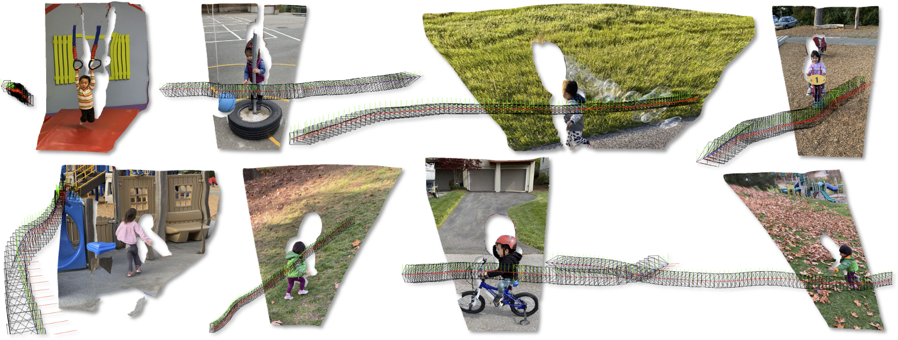
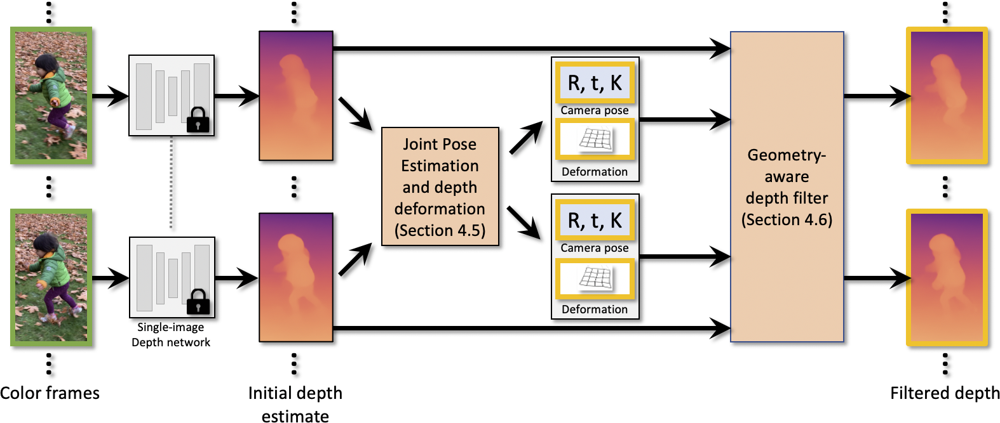
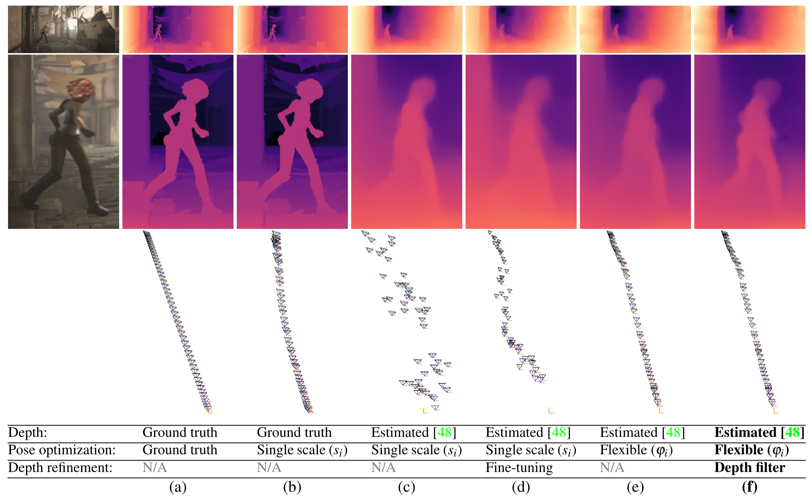

Robust Consistent Video Depth Estimation
CVPR 2021 (oral)


Paper
Code
Colab
Check the supplementary doc here with running time analysis.
We have released the code and companion colab notebook!
We present an algorithm for estimating consistent dense depth maps and camera poses from a monocular video. We integrate a learning-based depth prior, in the form of a convolutional neural network trained for single-image depth estimation, with geometric optimization, to estimate a smooth camera trajectory as well as detailed and stable depth reconstruction.
Our algorithm combines two complementary techniques: (1) flexible deformation-splines for low-frequency large-scale alignment and (2) geometry-aware depth filtering for high-frequency alignment of fine depth details. In contrast to prior approaches, our method does not require camera poses as input and achieves robust reconstruction for challenging hand-held cell phone captures that contain a significant amount of noise, shake, motion blur, and rolling shutter deformations. Our method quantitatively outperforms state-of-the-arts on the Sintel benchmark for both depth and pose estimations, and attains favorable qualitative results across diverse wild datasets.
Various configurations of our algorithm: (a-b) Ground truth depth with ground truth and estimated poses, respectively. (c) Misalignments in estimated depth impose jittery errors on the optimized camera trajectories. (d) CVD-style fine-tuning fails in the absence of precise poses. (e) Our flexible deformations resolve depth misalignments, which results in smoother camera trajectories. (f) Using geometry-aware depth filtering we resolve fine depth details (our final result).
@inproceedings{kopf2021rcvd,
title={Robust Consistent Video Depth Estimation},
author={Kopf, Johannes and Rong, Xuejian and Huang, Jia-Bin},
year={2021},
booktitle=IEEE/CVF Conference on Computer Vision and Pattern Recognition
}